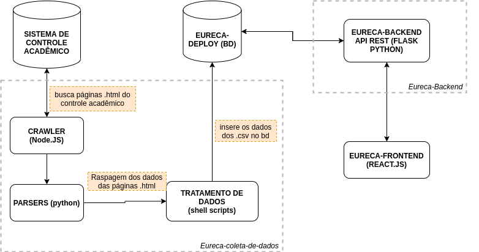
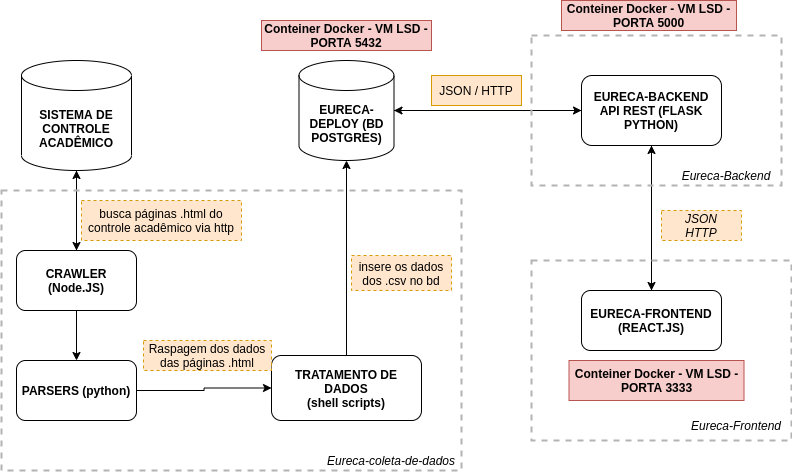

Projeto Eureca - Da coleta de dados ao backend
Autor
Este documento foi produzido por Paulo Mendes da Silva Júnior.
- Matrícula: 117210922
- Contato: paulo.junior@ccc.ufcg.edu.br
- Projetos documentados: https://github.com/computacao-ufcg/eureca-coleta-de-dados https://github.com/computacao-ufcg/eureca-backend
Descrição Arquitetural – Projeto Eureca (Coleta de dados ao backend)
Este documento descreve parte da arquitetura de uma parte do projeto Eureca (Coleta de dados e Backend). Essa descrição foi baseada principalmente no modelo C4.
Descrição geral sobre o Eureca (da coleta de dados ao backend)
O projeto Eureca se trata de um projeto da coordenação do curso de Computação@UFCG, projeto ao qual eu estou vinculado, que tem a finalidade de auxiliar a coordenação do curso em suas ações a curto e longo prazo. Com funcionalidades de monitoramento, estatísticas, comunicação e serviços que englobam todos os alunos do curso de Computação na UFCG.
Eureca (da coleta de dados ao backend)
Objetivo geral
Prover uma interface de monitoramento para a coordenação do curso, que possua informações sobre como os alunos estão se comportando de acordo com o período aos quais se encontram, em relação as suas notas, presenças e demais especificidades. Essas informações são divididas em quatro grandes blocos: Monitoramento, Estatísticas, Comunicação e Serviços.
Objetivos Específicos
Queremos que o coordenador seja capaz, de por exemplo, fazer um acompanhamento mais direto com aqueles alunos que se encontram em situações críticas. Além de observar também os que se encontram “Acima da média” e também os regulares. O sistema também irá possuir serviços de estatísticas sobre todos os alunos que já passaram pelo curso, sejam eles graduados, ativos ou evadidos.
Contexto
O repositório Eureca-coleta-de-dados inicia se comunicando com o sistema de controle acadêmico a fim de baixar páginas .html de alunos do curso de Computação@UFCG, onde ocorre todo um processamento nessas páginas, desde a raspagem dos dados relevantes das páginas .html até a criação dos relacionamentos dos dados em arquivos .csv para inserção no banco de dados. Logo após, esses dados são inseridos no Banco de Dados Eureca-Deploy, a partir disso, o Eureca-Backend, que consiste de uma API REST, acessa o banco de dados atráves de requisições HTTP e expõe endpoints para que a API seja acessada pelo Eureca-Frontend.
Logo abaixo temos o diagrama de contexto referente a parte de coleta de dados e backend do projeto.

Containers
O crawler acessa o sistema de controle acadêmico (serviço externo) e baixa várias páginas .html por aluno, que são as de cadastro, histórico, faltas, notas, etc. Essas páginas são processadas por parsers, que filtram os dados relevantes que estão nas páginas, esses dados então são formatados e por fim, retornados na saída padrão. Logo após scripts shell fazem a separação dos dados adicionado os relacionamentos e separando os dados em arquivos .csv que correspondem aos dados que serão inseridos em cada tabela do banco de dados, incluindo relacionamentos de chaves estrangeiras, chave auto incremental, etc. Assim os dados estarão prontos para serem inseridos no banco de dados. Com o banco de dados populado, o eureca-backend (API REST) o acessa através de queries SQL e o banco de dados retorna respostas JSON para o backend.

Implantação
Todo o sistema (exceto o Eureca-coleta-de-dados) está hospedado em uma máquina virtual Linux (Ubuntu) do LSD (Laboratório de Sistemas Distribuídos) da UFCG, onde nessa máquina virtual encontram-se 3 (três) contêineres Docker em execução, o primeiro é Eureca-deploy rodando na porta 5432, o segundo é o Eureca-Backend rodando na porta 5500, e por fim, o Eureca-frontend rodando na porta 3333.
Obs: O Eureca-coleta-de-dados não encontra-se em execução porque o coordenador, no momento, está fazendo esse processo de download das páginas e geração dos dados para o banco de dados localmente. Além de que esse é um processo que não é feito com frequência.

Endpoints
A API REST que se trata do repositório Eureca-Backend, no momento em que este documento foi escrito possui os seguintes endpoints.
- /api/estatisticas/ativos
- /api/estatisticas/ativos?de=periodo
- /api/estatisticas/ativos?de=periodo_min&ate=periodo_max
- /api/estatisticas/ativos/csv
- /api/estatisticas/egressos
- /api/estatisticas/egressos?de=periodo
- /api/estatisticas/egressos?de=periodo_min&ate=periodo_max
- /api/estatisticas/egressos/csv
- /api/estatisticas/evadidos
- /api/estatisticas/evadidos?de=periodo
- /api/estatisticas/evadidos?de=periodo_min&ate=periodo_max
- /api/estatisticas/evadidos/csv
Componentes
No diagrama de componentes (localizado abaixo) temos os componentes principais de cada container, além de seus relacionamentos e responsabilidades. Em nosso projeto o Crawler obtém as páginas .html de alunos no sistema de controle acadêmico, então os Parsers (que são scripts python) utilizam essas páginas para fazer uma espécie de raspagem dos dados relevantes (web scrapping) utilizando o Beautiful Soap, que é um pacote python para análise de documentos, e assim, retirar as informações relevantes para o projeto.
Então os Scripts Shell fazem uso desses dados filtrados para gerar arquivos .csv contendo relacionamentos desses dados para formar os dados que irão compor as tabelas do banco de dados. Após isso os dados são inseridos no banco de dados, e esses dados são acessados a partir de uma API REST (Eureca-Backend) que possui Controllers que fornecem as rotas e se comunicam com os Models, onde estes fazem as requisições que utilizam queries SQL, que são feitas através de uma lib chamada psycopg, que nada mais que é que um adaptador de banco de dados Postgres, onde o mesmo acessa um banco de dados Postgres através de queries SQL. Então esses dados resultantes das queries são processados no backend e retornados no formato JSOn em endpoints ou rotas, que são acessadas pelo Eureca-Frontend que renderiza esses dados de forma amigável em uma interface do usuário.

Código
Visão de informação
As informações trafegam pelo sistema de modo que tudo se inicia com os dados brutos, que são as páginas .html do SCA, então essas páginas são processadas pelos scripts de parser que filtram os dados relevantes para a aplicação. Logo, esses dados filtrados são processados por scripts shell que geram arquivos .csv que criam relacionamentos entre os dados, de modo que esses arquivos são os dados que serão inseridos nas tabelas no banco de dados.
Logo a seguir, podemos ver o diagrama de máquina de estados referente à coleta de dados:

Contribuições concretas
Como eu faço parte do projeto Eureca, então eu já fiz inúmeras Pull Request’s, principalmente nos repositórios Eureca-Deploy e Eureca-Backend, algumas dessas PR’s podem ser vistas nos seguintes links: Eureca-Deploy-pull_requests e Eureca-Backend-pull_requests.